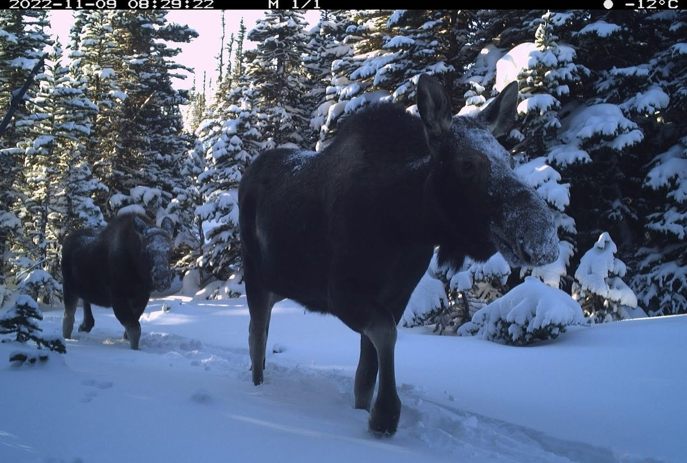

Frequently Asked Questions
Moose-Human Interactions Study: Utah State University M.S. Project

1. Why is there a camera on the trail? We are conducting a wildlife-recreation study to better understand when and where people and moose are most likely to overlap on public trails. Our goal is to identify areas and times when the potential for conflict may be greater and use this information to promote safer recreation practices.
2. Who is conducting this research project? This research is being conducted by Utah State University.
3. What kind of data are you capturing? We are collecting information about wildlife and recreation, including species observed, sex when identifiable, the number of people using the trail, and the type of recreation taking place (such as hiking, biking, or walking a dog). We are not collecting personal information about people using the trail.
4. Do the cameras record video and audio? No, the cameras capture still photographs only.
5. Who can view the images? Only members of the immediate research team can view the human images collected by the cameras.
6. How is my privacy being protected? Protecting the privacy of trail users is a priority for this project. Our research protocol requires images containing people to be processed using blurring software to obscure identifiable features. We do not record or log identifying information about people using the trails. This is a scientific research project, and the cameras are not being used for law enforcement or security purposes. Our data collection and privacy procedures have been reviewed and approved by the Utah State University Institutional Review Board. Below is an example of what an image looks like after the blurring process has been applied.
7. Who can I email with questions about the project? Please email Melany McEntee at melany.mcentee@usu.edu with any questions about the research project.

Blurred photo of Melany on one of our trail cams.